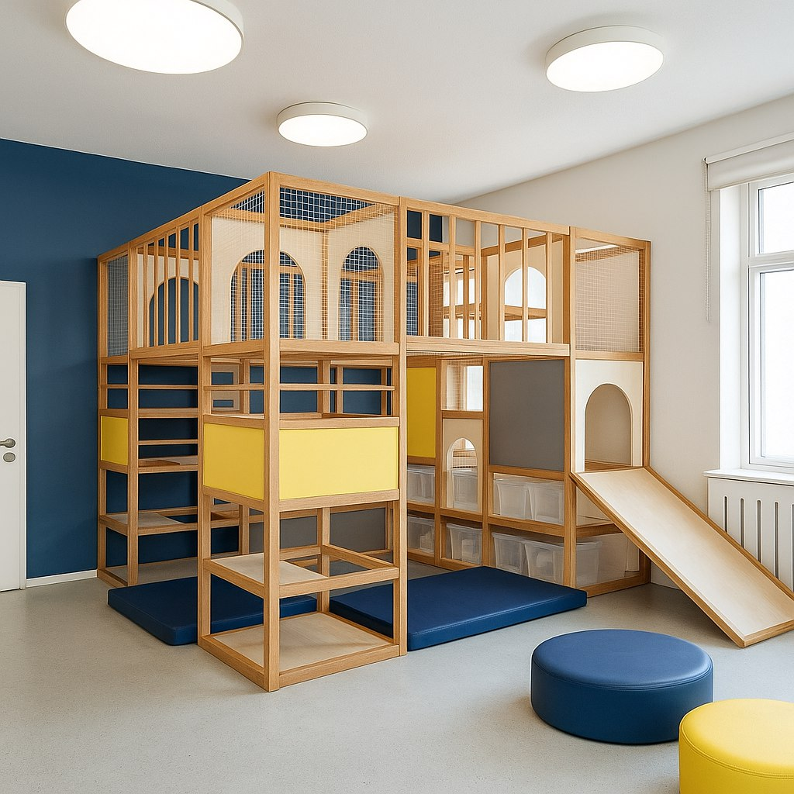
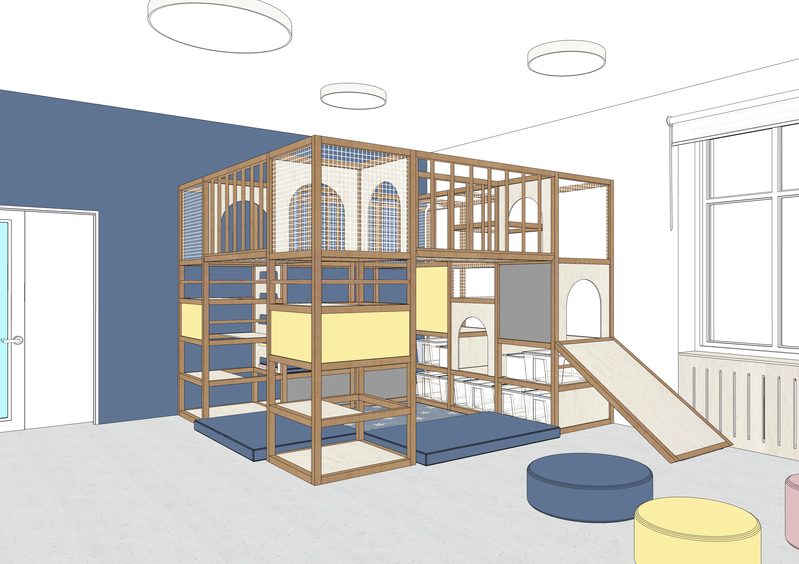
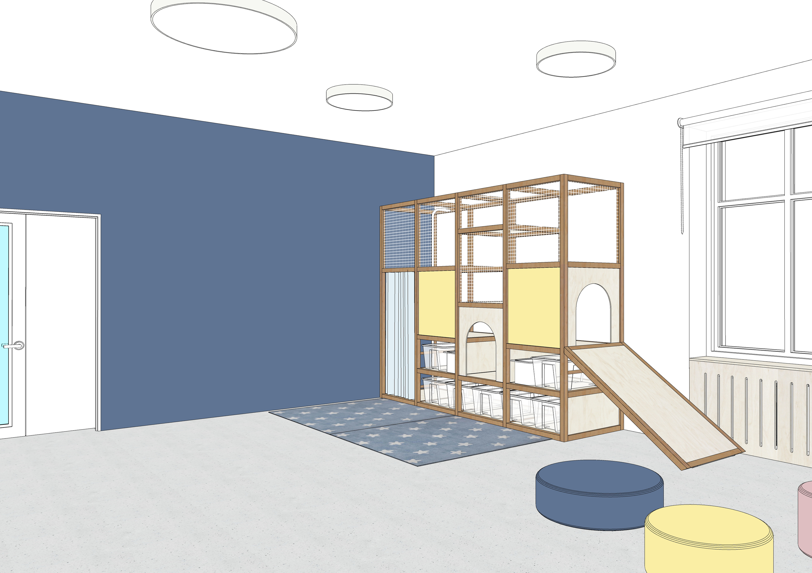
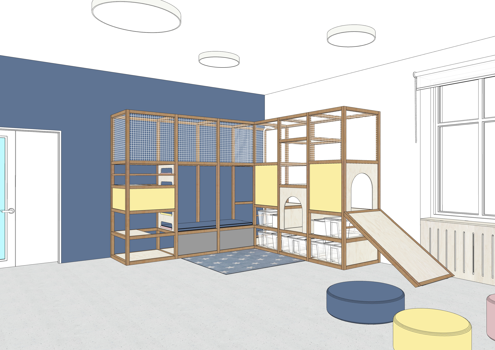

Один объект — несколько сценариев: движение, игра, смена состояния, общение, самостоятельная активность.


Комплекс Реутского 2.0 — двигательно-игровая среда для начальной школы. Он помогает рекреации работать не как проходу, а как месту движения, переключения и самостоятельной активности внутри дня.
Одно и то же пространство может быть просто проходом. А может стать местом, где появляется движение, игра и свой ритм внутри школьного дня.

После
ДоКомплекс Реутского 2.0 — это не отдельный снаряд и не случайный объект в рекреации. Это двигательно-игровая среда для начальной школы, встроенная в повседневную жизнь пространства.

Один объект — несколько сценариев: движение, игра, смена состояния, общение, самостоятельная активность.
Ребенок получает возможность двигаться, переключаться, пробовать, договариваться, исследовать пространство и находить свой ритм внутри школьного дня.
Школа получает среду, которая работает не только визуально, но и поведенчески: помогает иначе использовать рекреацию, поддерживает живой ритм дня и делает пространство более отличимым для родителей и команды.
Это не замена спортзалу и не еще один снаряд. Комплекс работает в другой логике: как часть повседневной среды, а не как отдельная активность по расписанию.

Покажем, как комплекс может работать именно в вашей школе.